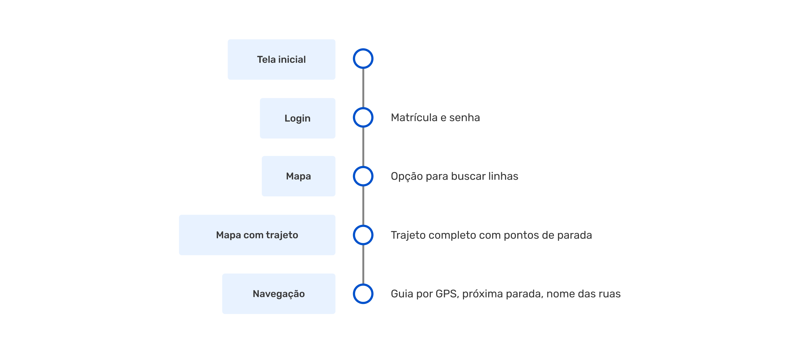
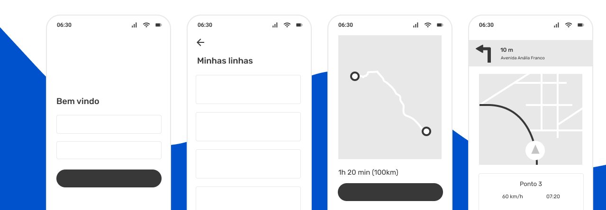
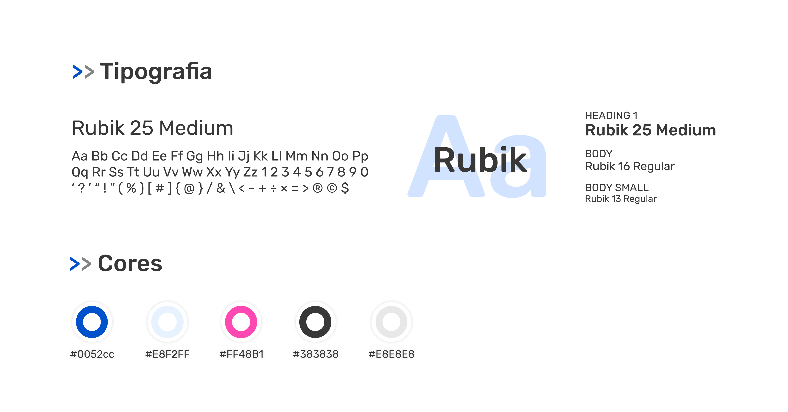
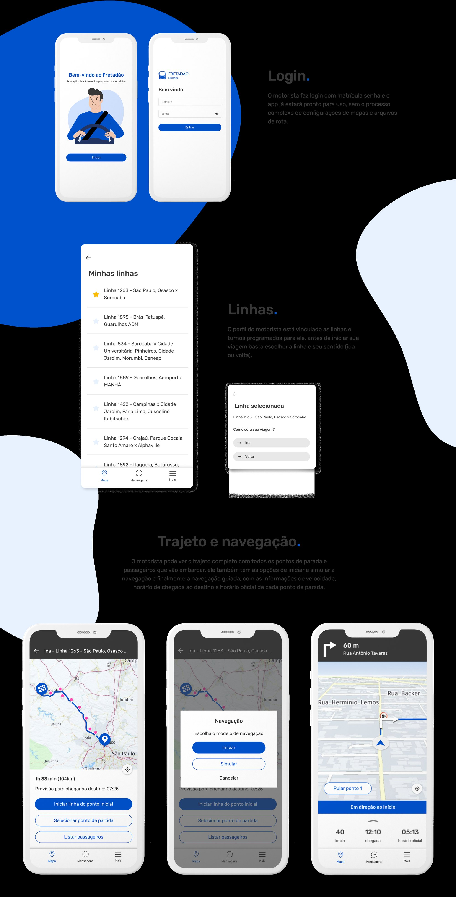

Design de APP para motoristas de fretado

Cliente e objetivo
Fretadão é uma empresa de tecnologia voltada para a área de fretamento e oferece o serviço de planejamento, implantação e gestão da operação de fretado para colaboradores de empresas de médio e grande porte.
O objetivo do projeto é facilitar a navegação de motoristas durante suas viagens, simplificando o processo atual e com um aplicativo novo e próprio do Fretadão.
Pesquisa
O primeiro passo foi buscar aplicativos de mapa e navegação para analisar prós e contras e o que faria sentido em nosso modelo de negócio, então estava pronta para construir um fluxo de navegação e estruturar as telas em um wireframe.
User flow
Antes do Fretadão maps, o motorista precisava usar um aplicativo externo, baixar mapas, adicionar o arquivo de rota e fazer as configurações necessárias para usar a ferramenta de navegação e ser guiado no trajeto.
O fluxo foi simplificado para que a conta do usuário esteja vinculada às linhas que ele usa e o app esteja pronto para que o motorista comece a navegação rapidamente.

Wireframes

UI Design
O app segue os padrões do design system do Fretadão, o Mão na roda.

Aplicativo
